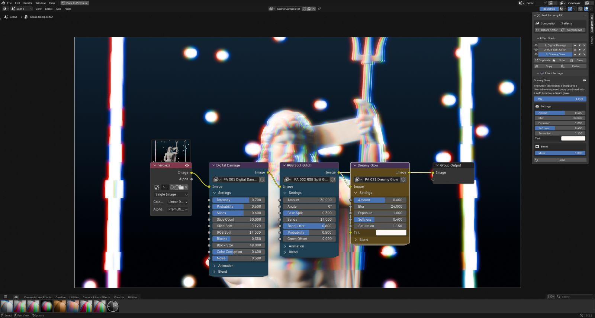

Post Alchemy FX documentation
Everything you need to add, stack, animate and render the 60 motion design compositor effects. Each effect is a regular Blender node group, so everything here also works by hand in the node editor.
01Install
- Download
post_alchemy-2.0.0.zipfrom your Superhive library. Do not unzip it. - In Blender, open Edit › Preferences › Get Extensions.
- Click the ⌄ menu at the top right and choose Install from Disk…, then pick the zip.
- Make sure Post Alchemy FX is enabled in the list.
You can also drag the zip straight into the Blender window.
02Quick start
- Open the Compositing workspace, or any Node Editor set to the Compositor.
- Press N and open the Post Alchemy tab in the sidebar.
- Pick a family (Glitch, Light & Lens, Screens) and click an effect. It is wired in between your image and the output.
- Change its values under Effect Settings. Add more effects to build a stack.
- Press Before / After to compare, then render with F12 or render the animation.

03The panel
The Post Alchemy tab appears in the sidebar of the Compositor, the Video Sequencer and the 3D Viewport. It has four parts:
| Part | What it does |
|---|---|
| Header | Shows the target (Compositor or the active strip) and the effect count. Holds Before / After and Surprise Me. |
| Browse Effects | Search, family tabs, Favorites, a large preview of the highlighted effect with its description, and the effect list. Click to add. |
| Effect Stack | Every Post Alchemy effect in the current target, top to bottom in processing order. |
| Effect Settings | The values of the selected effect, grouped into Settings, Animation and Blend. |
| Combo Presets | The 16 built-in presets and the presets you saved. |
Star an effect with the ★ button to add it to the Favorites tab. Surprise Me builds a random stack from a curated pool of effects that work well together.
04Effect stack
Effects run top to bottom: the first effect receives your clean image, and each one after it receives the result of the one above. Order matters. A glow placed after a CRT effect lights the scanlines; placed before, the scanlines cut through the glow.
| Button | Action |
|---|---|
| ▲ ▼ | Move the effect up or down in the chain. |
| Eye | Mute the effect without removing it. |
| Solo | Show only this effect. Click again to restore the others. |
| Duplicate | Copy the effect with its values, placed right after it. |
| Randomize | New seed and slightly varied values for a fresh take on the same look. |
| Reset | Return all values to their defaults. |
| ✕ / Clear | Remove one effect, or the whole stack. Clear asks first, and both can be undone with Ctrl Z. |
| Copy / Paste | Copy the stack as text, paste it into another scene, another .blend or onto strips. |

05Settings, Mix & Mask
Every effect has its own Settings panel. Hover a value in Blender to see its tooltip; the full list is in the effect reference.
Mix
Every effect ends in a Mix value from 0 to 1. Use it to dial an effect back without touching its look.
Mask
Every effect group has a Mask input. Connect any black and white image (a Cryptomatte, an ID mask, a drawn mask or a gradient) and the effect only shows where the mask is white. Without a mask the effect covers the whole frame.
Editing by hand
The groups are named PA 001 Digital Damage and so on. Open one with Tab to see how it works. If you break one, use Rebuild Effect Groups in the panel menu to restore the originals.
06Animation
Effects are animated by default: glitches fire in bursts, glows breathe, screens roll and flicker. Animation is driven by scene time, so it follows your frame rate and plays the same on every render.
| Control | Meaning |
|---|---|
| Animate | On by default. Turn it off to freeze the effect on one state, for stills or a steady look. |
| Speed | Multiplies how fast the effect moves. 0.5 is half speed, 2 is double. |
| Seed | Changes the random pattern. Give two copies of the same effect different seeds so they never fire together. |
| Rate / Burst Rate | How many times per second random parts re-roll (on glitch effects). |
| Evolution | Slow drift of the underlying noise, for effects such as light leaks and haze. |
Any value can be keyframed like a normal Blender property: hover it and press I. Keyframe Mix from 0 to 1 for a quick transition, or Intensity for a hit on the beat.
07Presets
A preset is a saved stack with its values. Applying one replaces the current stack. The 16 built-in looks are: .
Your own presets
Build a stack, then press Save Preset and give it a name. Saved presets appear under the built-in ones in every project. Delete them with the ✕ next to their name.
08Sequencer strips
Post Alchemy works on any strip in the Video Sequencer, such as movie clips, image sequences or scene strips. Select a strip, open the sidebar with N and use the Post Alchemy tab exactly as in the compositor. The effects are stored in a Compositor modifier on the strip.
To give several strips the same look, build it on one strip, press Copy, select the other strips and press Paste to Selected.
09Live viewport
In the 3D Viewport, press Viewport Preview in the Post Alchemy tab. It switches the view to Rendered shading and turns on viewport compositing, so you see the finished look while you move the camera, animate or light. Turn it off to get full viewport speed back.

10Resolution & HDR
Resolution independent
All sizes (blur radius, block size, scanline spacing, pixel size) are measured against a 1080p frame and scale with your render. A look you build at 50% resolution matches the final 4K render. Sizes in the settings are in 1080p pixels.
HDR safe
Effects expect a scene-linear image, which is what Blender renders. Highlights brighter than 1.0 are handled without fireflies, negative colors or clipping. For best results keep AgX or Filmic as the view transform and grade after the stack.
Speed
Set Render Properties › Performance › Compositor › Device to GPU for the fastest previews and renders. All effects are plain nodes and also run on the CPU and on render farms without the add-on installed.
11Shortcuts
| Keys | Where | Action |
|---|---|---|
| Ctrl Alt E | Compositor, Sequencer, 3D Viewport | Pie menu: favorites, presets, Surprise Me, Before / After, add effect |
| Shift A | Compositor | Add › Post Alchemy FX › any effect, for manual wiring |
| N | Any editor | Show or hide the sidebar with the Post Alchemy tab |
12Effect reference
All 60 effects with every control and its default. Open an effect to see its settings.
13Troubleshooting
The image is black or unchanged
Make sure the compositor is turned on (Compositing workspace, Use Nodes) and that the stack is connected to the Group Output or Composite node. Press Before / After twice to rewire the stack.
An effect looks too strong or too weak
Very bright renders push glow effects harder. Raise the effect's Threshold, lower Mix, or lower exposure before the stack.
The look changes between preview and final render
Check that both use the same frame and that Animate is on or off as you expect. Resolution changes do not change the look.
Rendering is slow
Switch the compositor device to GPU, mute effects you are not using, and avoid stacking several large blurs (Dreamy Glow, Black Mist, Halation) at full strength.
I edited a group and broke it
Use Rebuild Effect Groups from the panel menu. Your stack keeps its values.
14Changelog
2.0.0
Rebuilt from scratch for motion design: 60 effects in three families, 16 new presets, animated by default with the Animate switch, resolution independence, HDR-safe glows, favorites, Surprise Me, copy and paste stacks, paste to selected strips, and the Ctrl Alt E pie menu.